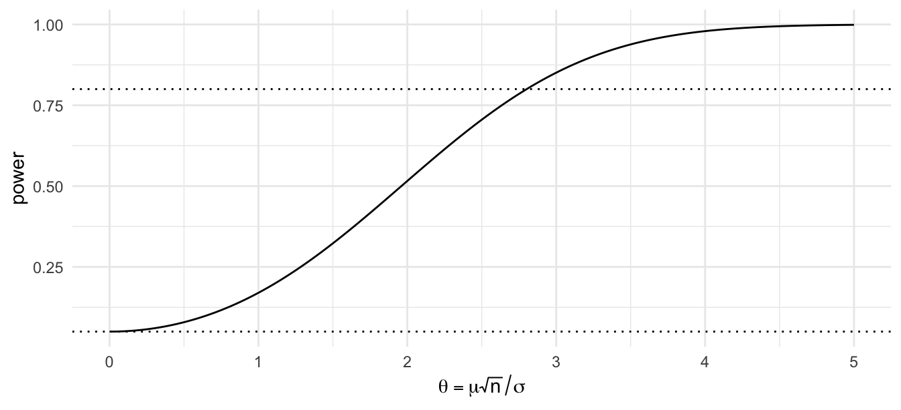
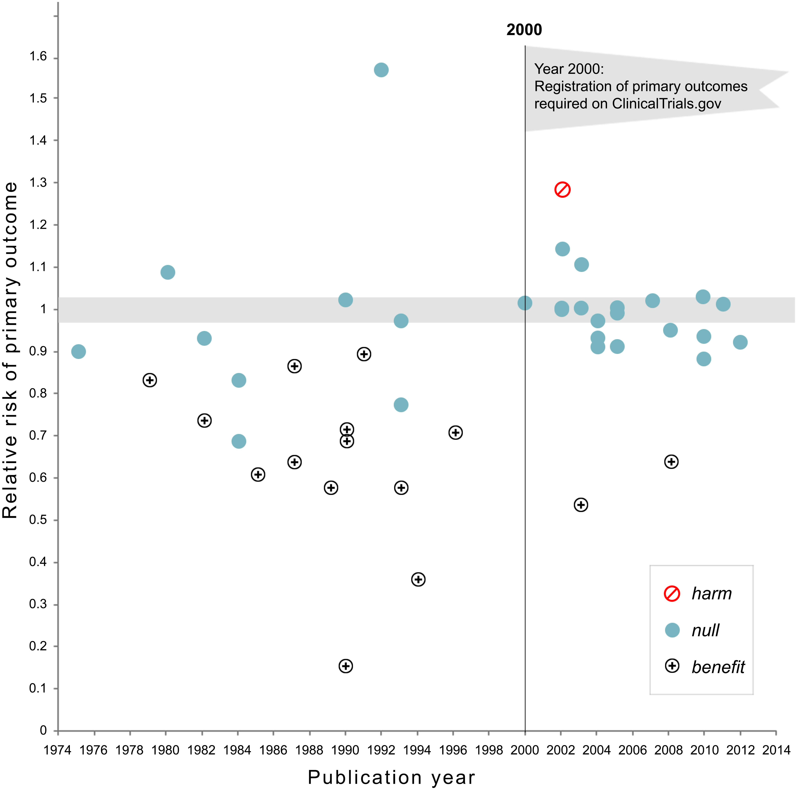
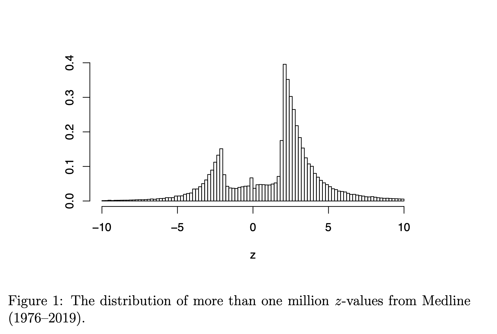
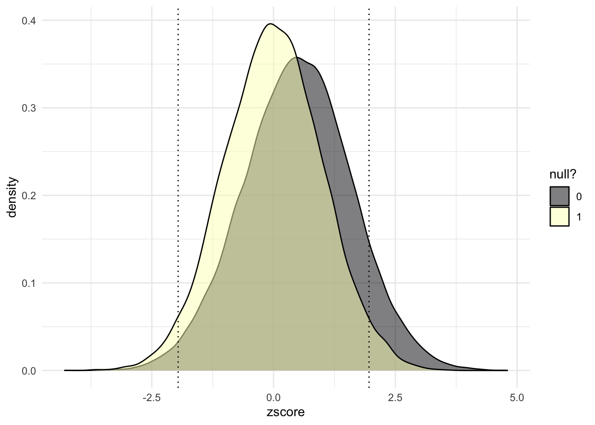
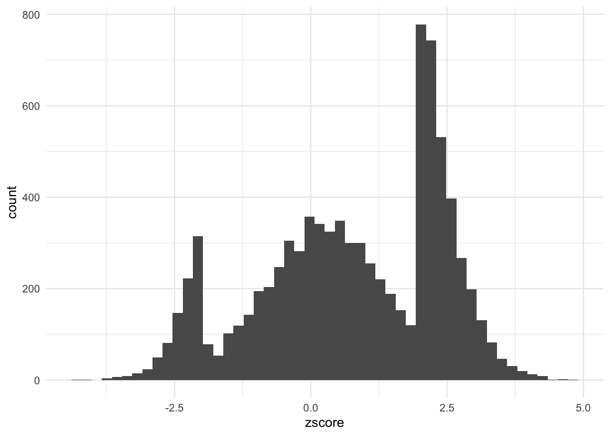
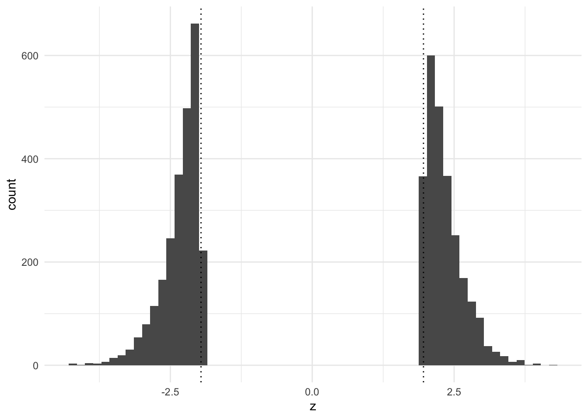

Selection and the replication crisis
Preamble: purpose of the course
Much of what goes wrong in data science does not announce itself as an ethical problem. It appears as a technical step: a threshold, a filter, a choice of outcome variable, a decision about which rows to keep. The step looks neutral, someone takes the default, and a value judgement has been made without anyone noticing. This course is about those steps. The formal content, mostly probability you already know and some causal modelling you may not, is there to make the hidden choice visible.
There are five questions we will keep asking, lenses that bring hidden choices into focus.
- What are we optimising or predicting? Whose definition of the outcome governs.
- Who is in the data? Whether the unseen are like the seen, and who decided.
- Which comparison gets reported? Whether the question was fixed before the answer.
- Who bears the error? What each kind of mistake costs, and on whom that cost falls.
- You have to choose, so choose, and defend it. Sometimes the mathematics proves that a choice is unavoidable. Pretending it was forced is its own failure.
Each of these ends with the same two words: and why?
There is also a question the lenses cannot answer:
Who benefited from that choice being invisible? And would a more competent analyst have chosen differently?
Sometimes the answer is yes and the fix is better statistics. Sometimes the answer is no: the technique was defensible and the harm came from somewhere else.
Important note: my views on these topics are not a consensus. You are not expected to adopt them, and a well-argued position I think is wrong can still get full marks. What is assessed is whether you can find a defensible position, say what it assumes, and defend it against the strongest objection.
Summary
Science has a replication problem. Some of it is fraud and some is incompetence, but a surprising amount needs neither. If a result is more likely to be published when it is significant, the published literature is a filtered sample of the studies that were run, and the filter changes what the published numbers mean. We build that filter in a simulation, derive what it does to an estimate, and then ask who benefited from the filter being invisible.
The replication crisis
A study is replicated when an independent team repeats it with new data and finds the same thing: an effect in the same direction, of similar size, and usually significant again. Replication is supposed to be routine. It turns out to be rare, and when it is attempted it often fails.
In 2015 the Open Science Collaboration replicated 100 published psychology experiments. Of the 97 originals that had reported significant effects, 36% replicated at \(p < 0.05\), and the replication effect sizes were about half the originals. In 2016 Nature surveyed 1,576 researchers. More than 70% had tried and failed to reproduce someone else’s result, and more than half had failed to reproduce one of their own. The citations are in Wikipedia: Replication crisis.
Here is what happened to one set of trials when registration became required. Kaplan and Irvin (2015) looked at 55 large trials of drugs and supplements funded by the US National Heart, Lung and Blood Institute. Before 2000, 17 of 30 (57%) found a significant benefit. From 2000, trials had to register their primary outcome at clinicaltrials.gov before collecting data. After that, 2 of 25 (8%).

Same funder, same kind of trial, same statistics. What changed is that the comparison had to be chosen before the data could influence it.
Here is a second picture, a histogram. Van Zwet and Cator (2020) collected over a million \(z\)-values from Medline abstracts published between 1976 and 2019. A \(z\)-value is an estimate divided by its standard error.

It is striking how large the hole in the histogram is: values between \(-2\) and \(2\) are missing in bulk. Results that were not significant were far less likely to appear.
Two explanations are on the table. The first is misconduct and incompetence, and there is plenty of both; see the hall of shame in the optional readings. The second is that nobody has to behave badly for the picture to look like that. A journal preferring significant results, a researcher writing up the study that worked, a reader citing the surprising finding: each one is a filter. Let’s take the second explanation seriously enough to build it.
Rejection rates and power
You estimate a quantity \(\mu\) with an estimator \(\hat\mu\) whose standard error is \(\mathrm{se}\). Standardise: \[ Z = \frac{\hat\mu}{\mathrm{se}} \sim N(\theta, 1), \qquad \theta = \frac{\mu}{\mathrm{se}}. \] For a sample mean with \(n\) observations and noise standard deviation \(\sigma\), \(\mathrm{se} = \sigma/\sqrt n\) and \(\theta = \mu\sqrt n/\sigma\). The two-sided test at level \(\alpha = 0.05\) rejects when \(|Z| > c\) with \(c = 1.96\).
Under the null hypothesis \(\mu = 0\), so \(\theta = 0\) and \[ P(|Z| > c \mid \mu = 0) = 2\,(1 - \Phi(c)) = 0.05 . \] This is the rejection rate under the null, the error rate the test advertises.
When \(\mu \neq 0\) the rejection probability is the power, \[ \text{power}(\theta) = P(|Z| > c) = 1 - \Phi(c - \theta) + \Phi(-c - \theta). \] Everything about the study enters through the single number \(\theta\).
| \(\theta\) | 0 | 0.5 | 1 | 1.5 | 2 | 2.5 | 2.8 | 3 | 4 |
|---|---|---|---|---|---|---|---|---|---|
| power | 0.05 | 0.08 | 0.17 | 0.32 | 0.52 | 0.71 | 0.80 | 0.85 | 0.98 |
Which of \(\mu\), \(\sigma\) and \(n\) does the analyst control? Usually only \(n\). The effect is whatever it is, and \(\sigma\) is a property of the measurement. So power at a fixed \(\mu\) is a statement about how much the estimate varies: the same \(\mu\) estimated with a wider standard error is caught less often.
The rates in a simulation
The function below generates a dataset with an outcome \(Y\), a covariate \(X\) and a binary group \(A\) from a linear model with whatever coefficients you choose. With every coefficient at zero, \(Y\) is pure noise and every regression coefficient is a null hypothesis that happens to be true.
set.seed(1)
generate_data <- function(beta0 = 0, betaX = 0, betaA = 0, betaXA = 0,
n = 200, proportion = 1/2) {
X <- rnorm(n)
A <- rbinom(n, 1, proportion)
Y <- beta0 + betaX * X + betaA * A + betaXA * X * A + rnorm(n, sd = 1)
data.frame(Y = Y, X = X, A = factor(A))
}
# One experiment: generate data, fit the model, return the p-value for X
one_experiment <- function(beta0 = 0, betaX = 0, betaA = 0, betaXA = 0,
n = 200, proportion = 1/2) {
one_sample <- generate_data(beta0, betaX, betaA, betaXA, n, proportion)
one_fit <- lm(Y ~ X + A + X * A, one_sample)
summary(one_fit)$coefficients[2, 4]
}Run it many times under the null and count how often \(p < 0.05\).
rejection_level <- 0.05
n_experiments <- 2000
mean(replicate(n_experiments, one_experiment()) < rejection_level)[1] 0.0415Close to 0.05, as it should be. Now give \(X\) a small real effect and watch the rejection rate rise with \(n\).
sapply(c(100, 200, 400, 800), function(n)
mean(replicate(n_experiments, one_experiment(betaX = 0.2, n = n)) < rejection_level))[1] 0.2795 0.5100 0.8135 0.9795A coefficient of 0.2 is caught about half the time at \(n = 200\) and about 80% of the time near \(n = 400\). Can you predict those numbers from the table? The coefficient on \(X\) in Y ~ X + A + X * A is the slope within the group \(A = 0\), so it is estimated from roughly half the sample, and \(\theta \approx 0.2\sqrt{n/2}\). At \(n = 400\) that is \(\theta \approx 2.8\). The simulation and the formula agree. Check that first, every time, for both.
Simulating publication bias
Now the filter. Simulate a world of many studies. Some test hypotheses that are true nulls; the rest test real effects of modest size. Every test is done honestly. The only thing that goes wrong is that most results are written up only if they are significant. The rest stay in the file drawer, which is why this is called the file-drawer effect.
set.seed(1)
N <- 5e4 # studies conducted
proportion_null <- 0.4
signif_level <- qnorm(0.975)
is_null <- rbinom(N, 1, proportion_null)
effect_size_nonnull <- 0.5
simulated_world <- data.frame(is_null) |>
mutate(zscore = rnorm(N,
mean = (1 - is_null) * effect_size_nonnull,
sd = 1 + 0.1 * (1 - is_null)))The \(z\)-scores have mean zero and standard deviation one when the null is true, and a slightly larger mean and spread when it is false. Here is the world before anybody decides what to publish.
simulated_world |>
ggplot(aes(x = zscore, fill = factor(is_null))) +
geom_density(alpha = 0.5) +
geom_vline(xintercept = c(-1, 1) * signif_level, linetype = "dotted") +
scale_fill_viridis_d(option = "magma", name = "null?")
Nobody sees this plot. An analyst does not know which of their hypotheses are null, and neither does a journal. The literature sees the subset that passes the filter.
proportion_filtered <- 0.9
which_studies_filtered <- rbinom(N, 1, proportion_filtered)
simulated_publications <- simulated_world |>
mutate(filtered = which_studies_filtered) |>
filter(filtered == 0 | # published regardless, OR
abs(zscore) > signif_level) # large enough to pass the filter
nrow(simulated_publications)[1] 8768simulated_publications |>
ggplot(aes(zscore)) +
geom_histogram(bins = 50)
Compare this with the Medline histogram. In the simulation, the hole between \(-1.96\) and \(1.96\) appeared without a single dishonest test. The Medline histogram surely contains some dishonest ones, but it does not need them to look the way it does.
Before reading on, guess the average of \(|z|\) among the published studies whose null hypothesis was true and which had to pass the filter. Then check:
simulated_publications |>
filter(is_null == 1, filtered == 1) |>
summarise(mean_abs_z = mean(abs(zscore)), n = n()) mean_abs_z n
1 2.329553 926The significance filter
That number is not an accident of the simulation. It is a property of the normal distribution.
Suppose \(Z \sim N(\theta, 1)\) and we only get to see \(Z\) when \(Z > c\). What is the expected value of what we see? Write \(u = z - \theta\), so that \(u\) is standard normal and the condition becomes \(u > c - \theta\): \[ E[Z \mid Z > c] = \frac{\int_c^\infty z\,\phi(z - \theta)\,dz}{P(Z > c)} = \frac{\int_{c-\theta}^\infty (u + \theta)\,\phi(u)\,du}{1 - \Phi(c - \theta)} . \] The \(\theta\) part of the numerator integrates to \(\theta\,(1 - \Phi(c-\theta))\). For the \(u\) part, \(\phi'(u) = -u\,\phi(u)\), so \(\int_{c-\theta}^\infty u\,\phi(u)\,du = \phi(c - \theta)\). Therefore \[ \boxed{\;E[Z \mid Z > c] = \theta + \frac{\phi(c - \theta)}{1 - \Phi(c - \theta)}\;} \] The second term is the bias induced by the filter. It is always positive, and its denominator is the power of a one-sided test at threshold \(c\).
Under the null. Put \(\theta = 0\) and \(c = 1.96\). Then \(\phi(1.96) = 0.0584\) and \(1 - \Phi(1.96) = 0.025\), so \[ E[Z \mid Z > 1.96] = \frac{0.0584}{0.025} \approx 2.34 . \] By symmetry the same number is \(E[\,|Z|\, \mid |Z| > 1.96]\) for the two-sided filter. A true null effect that passed the filter is, on average, 2.3 standard errors from zero. The estimate is not wrong because someone cheated, but because you only got to see it when it was large. This is called the winner’s curse.
The filter on its own
You do not need the whole simulated world to see this. Generate null \(z\)-scores, keep the ones that pass, and look at what survived.
z <- rnorm(1e5) # every null hypothesis true
survivors <- z[abs(z) > 1.96]
length(survivors) / length(z) # should be about 0.05[1] 0.05065mean(abs(survivors)) # compare with phi(1.96) / 0.025[1] 2.335377data.frame(z = survivors) |>
ggplot(aes(z)) +
geom_histogram(bins = 60) +
geom_vline(xintercept = c(-1.96, 1.96), linetype = "dotted")
Nothing in the survivors’ distribution is near zero, and none of them tells you it came through a filter.
Exaggeration
The null case is the extreme. What does the filter do to true effects?
For \(\theta > 0\) the boxed formula gives the expected published estimate. Its ratio to the truth, \(E[Z \mid Z > c]/\theta\), is how much a published estimate exaggerates on average. Here it is for a few values, with the one-sided power at \(c = 1.96\):
| \(\theta\) | 0.5 | 1 | 1.5 | 2 | 2.5 | 3 | 4 |
|---|---|---|---|---|---|---|---|
| power | 0.07 | 0.17 | 0.32 | 0.52 | 0.71 | 0.85 | 0.98 |
| \(E[Z \mid Z > c]\) | 2.41 | 2.49 | 2.61 | 2.77 | 2.99 | 3.27 | 4.05 |
| exaggeration ratio | 4.8 | 2.5 | 1.7 | 1.4 | 1.2 | 1.1 | 1.0 |
A study with 17% power that reaches significance reports, on average, two and a half times the true effect. A study with 85% power overstates it by about a tenth. Van Zwet and Cator prove the general statement: the exaggeration factor is a decreasing function of the power, and if the power is 50% or less, the usual 95% confidence interval on a significant result does not reach its nominal coverage. (Their formula is for the two-sided filter on \(|Z|\); for \(\theta \ge 1\) it gives the same numbers as the one-sided version in the table, to two decimals.)
Put the two halves together. The power of a study is about how much its estimate varies. The exaggeration of a published estimate is a bias. The file-drawer effect turns variance into bias. So when you are shown an estimate, ask whether the problem is bias, variance, or both.
What the model leaves out
Two things, both of which make matters worse. A two-sided filter also lets through estimates of the wrong sign, so a low-powered study can produce a significant result pointing the wrong way. And real filters are softer than a hard threshold and act at several stages. Neither changes the direction of anything above.
Optional: sign and magnitude errors
Gelman and Carlin (2014) give the two consequences of the filter names. A Type M (magnitude) error is the exaggeration ratio above. A Type S (sign) error is a significant estimate with the wrong sign. For the two-sided filter its probability is \[ P(Z < -c \mid |Z| > c) = \frac{\Phi(-c-\theta)}{1 - \Phi(c-\theta) + \Phi(-c-\theta)} , \] the lower tail’s share of what passes.
| \(\theta\) | 0.25 | 0.5 | 1 | 1.5 | 2 |
|---|---|---|---|---|---|
| power | 0.06 | 0.08 | 0.17 | 0.32 | 0.52 |
| wrong sign, given significant | 0.24 | 0.09 | 0.01 | 0.001 | 0.0001 |
At 6% power, nearly a quarter of the significant results point the wrong way. By 30% power the problem has gone, while the magnitude error is still a factor of 1.7. So the two errors have different cures: a little more power removes sign errors, and a lot more power is needed before the exaggeration is small.
Optional and advanced: shrinkage, an empirical Bayes view
Everything above conditions on selection: it averages over the estimates that passed. A Bayesian asks a different question. Given this \(z\), what is \(\theta\) likely to be? Answering it needs a distribution for \(\theta\) across the studies being done. Suppose the standardised effects in a field are \[ \theta \sim N(0, \tau^2), \qquad Z \mid \theta \sim N(\theta, 1). \] Then marginally \(Z \sim N(0, 1 + \tau^2)\), and \[ \theta \mid Z = z \;\sim\; N\!\left( \frac{\tau^2}{1 + \tau^2}\, z,\; \frac{\tau^2}{1 + \tau^2} \right). \] The posterior mean shrinks \(z\) towards zero by the factor \(\tau^2/(1+\tau^2)\). With \(\tau = 1\), a field where the typical study has power under 20%, a just-significant \(z = 1.96\) is best read as about \(0.98\). The frequentist calculation from the other direction gave \(1.96/2.5 \approx 0.8\) at \(\theta = 1\). Different questions, similar answers.
Two things follow. First, the selection rule does not appear in the posterior. The filter acts on \(z\), and once you condition on \(z\) it has nothing more to say. The bias in the frequentist calculation comes from averaging over what was selected; the Bayesian conditions on what was seen. You can check this by simulation:
set.seed(2)
tau <- 1
theta_true <- rnorm(2e5, 0, tau)
z <- theta_true + rnorm(2e5)
significant <- z > 1.96
mean(z[significant] - theta_true[significant]) # the raw estimate, among the selected[1] 1.303844mean(z[significant] / 2 - theta_true[significant]) # the shrunk estimate, among the selected[1] -0.0008693044The raw estimate overshoots by more than one standard error on average among the significant results; the shrunk estimate does not overshoot at all.
Second, \(\tau\) is not known, but it can be estimated from an unfiltered collection of \(z\)-values, since \(\mathrm{Var}(Z) = 1 + \tau^2\). This is empirical Bayes. Do it on a filtered collection and the answer is wrong in a predictable direction: the filter removes the small \(|z|\), the variance is inflated, \(\hat\tau^2\) comes out too large and the shrinkage too weak. Van Zwet, Schwab and Senn (2021) did it on 23,747 \(z\)-values from trials in the Cochrane database, which records trials whatever their outcome, using a mixture of normals rather than a single one. They estimate the median achieved power of a trial to be 0.13, and that an estimate just significant at the 5% level overstates the true effect by a factor of about 1.7. Their conclusion is in the title of the paper that gave us the Medline histogram: the need to shrink.
Many comparisons
The filter does not have to sit between studies. It can sit inside one. If an analyst runs \(k\) independent tests of true null hypotheses and reports the smallest \(p\)-value, the chance that at least one is below 0.05 is \[ 1 - 0.95^k , \] which is 0.23 at \(k = 5\), 0.40 at \(k = 10\) and 0.64 at \(k = 20\). Reporting the best of \(k\) is the significance filter applied to one analyst’s own work.
The analyst need not literally run all \(k\). Gelman and Loken call this the garden of forking paths. An analysis involves many choices: which outcome, which subgroup, which covariates, which outliers to drop, one-sided or two-sided. If the choice depends on the data, the reported test behaves as though the alternatives had been run, even when they were not. The researcher who “just looked at the data first” is in a similar position to the one who ran twenty tests, and it is harder to count the paths.
Here is a recent example from genetics. In 2017 a large team reported 91 genes linked to neurodevelopmental disorders, 38 of them new (Stessman et al., Nature Genetics). They had sequenced 208 candidate genes in more than 11,000 cases. To decide which genes had more mutations than chance would produce they needed a significance threshold corrected for the number of genes tested, and they used 208. But the mutation counts combined their own data with earlier studies that had sequenced the whole exome, around 20,000 genes, and a mutation found by searching 20,000 genes is much less surprising than one found by searching 208. A group of geneticists led by Mark Daly pointed this out within a month. Redone with the larger denominator, one of the 38 new genes remained. To see the size of the error: a Bonferroni threshold at 5% is \(0.05/208 = 2.4 \times 10^{-4}\) for 208 tests and \(0.05/20{,}000 = 2.5 \times 10^{-6}\) for 20,000. A factor of a hundred in the threshold was the difference between 38 discoveries and one. Nobody fabricated anything. The senior author’s comment to Spectrum: “We should have seen that when we went across the tables, and we just didn’t.”
The remedy has a name, pre-specification or pre-registration: fix the analysis before the data can influence it. It does not make a test more powerful. It makes the reported comparison the one that was planned. The NHLBI trials above are what that looks like at the scale of a field.
The profession’s own code says the same thing. The American Statistical Association’s guidelines (2022 revision, item B.3) ask the practitioner to be “transparent about a priori versus post hoc objectives and planned versus unplanned statistical practices” and to disclose “when multiple comparisons are conducted and any relevant adjustments.” If you wonder why an ethics course is teaching you about power and selection, this is why.
How much of the crisis does selection alone explain?
Ioannidis (2005) asked a simple question. Among the hypotheses a field tests, suppose a share \(p\) are true. Tests are run at level \(\alpha\) with power \(1 - \beta\). In the long run, what fraction of rejections are false? By Bayes’ rule, \[ P(H_0 \text{ true} \mid \text{reject}) = \frac{(1 - p)\,\alpha}{(1 - p)\,\alpha + p\,(1 - \beta)} . \] The complement is what he calls the positive predictive value of a research finding. With \(\alpha = 0.05\):
| \(p\) | power | \(P(H_0 \mid \text{reject})\) |
|---|---|---|
| 0.5 | 0.8 | 0.06 |
| 0.5 | 0.2 | 0.20 |
| 0.1 | 0.8 | 0.36 |
| 0.1 | 0.2 | 0.69 |
A field where true effects are rare and studies are small will have a literature in which most significant findings are false, with no misconduct at all. Each ingredient is one of this week’s ideas: \(\alpha\) is the advertised error rate, the power is the variation, and \(p\) is about who is in the data, because a field that tests wild hypotheses has a different literature from one that tests safe ones.
What the formula does not show is that most published findings in any particular field are false. Nobody observes \(p\). Ioannidis’s title is a claim about the range of \(p\) and power he considered plausible, and you can disagree with the range without disagreeing with the arithmetic.
The same arithmetic, with a risk score in place of a \(p\)-value, describes a classifier that flags people rather than hypotheses. We will do it again.
Two lenses
Which comparison gets reported? Inside a study: the best of \(k\) tests, the forking paths, the 208 genes.
Who is in the data? Between studies. For anyone reading the literature, the data are the published studies, and the ones in the file drawer are missing in a known direction. A meta-analysis that pools every published trial has a sample chosen by the filter, and Ioannidis’s \(p\) is a statement about which hypotheses a field puts into the data at all.
And why? Because the filter serves someone: the journal that prefers positive results, the author whose career depends on them, the reader who prefers a story.
Two cases
Would a more competent analyst have chosen differently? One case where the answer is yes and one where it is no.
Lucia de Berk. A Dutch nurse was convicted in 2003, and again on appeal in 2004, of murders and attempted murders. Part of the evidence was a calculation: the chance that the deaths and resuscitations on her wards would all fall on her shifts by coincidence was put at 1 in 342 million. The number came from three wards. For each ward the statistician computed the probability that a nurse working her share of shifts would be present at that many incidents, and then multiplied the three probabilities together.
Two things are wrong with that before we even get to the data. A product of three \(p\)-values is not a \(p\)-value. Combining them properly (Fisher’s method, \(-2\sum_i \log p_i \sim \chi^2_6\) under the null) gives about one in a million, not one in 342 million. And \(P(\text{this pattern} \mid \text{coincidence})\) is not \(P(\text{coincidence} \mid \text{this pattern})\). To get from one to the other you need the prior probability that a nurse is a murderer and the number of nurses whose shifts could have been examined. Then the data: incidents had been classified as suspicious partly because she was present at them, and some incidents counted against her happened when she was not on the ward. Recomputed by Richard Gill and colleagues with corrected data, the chance came out somewhere between about 1 in 9 and 1 in 50, depending on what is assumed about how incident rates vary between nurses. The case was reopened in 2008 and she was acquitted in 2010. A more competent analyst would have refused to compute the number that way. Yes.
Ofqual, 2020. Exams were cancelled and England’s regulator had to produce grades without them. Teachers submitted a grade for each student and a rank order within each school and subject. The model then replaced the grades with a predicted grade distribution for the school, built from the school’s own results in 2017 to 2019 and adjusted for the cohort’s prior attainment: the student at rank \(r\) of \(n\) received the grade at the \(r/n\) point of that distribution. The student’s own work entered only through \(r\). Two students with identical work at different schools got different grades, and a school whose past cohorts had few top grades could award few this year. For small cohorts (under 15) the teachers’ grades were used, wholly or in part. Small classes are commoner in private schools, which is where the widely reported private-school advantage came from. On results day, 13 August, about 36% of A-level grades were one grade below the teacher’s and 3% two grades below. On 17 August the model was withdrawn and the teachers’ grades were used instead.
As statistics the model was defensible. A regulator told to hold the grade distribution steady without any exams has to standardise against something, and the school’s own history is a reasonable something. The trouble was not the arithmetic. A rule about school histories was used to decide individual futures, the cost fell on students who had no way to contest it, and more statistical training at the regulator would not have changed that. No.
If your answer is “better statistics would have fixed it” every time, or “the statistics were fine, it’s all politics” every time, you need to recalibrate.
Readings
Required
- ms4ds, chapter 3: Ethical data science, sections 3.1 to 3.6. Start it now and read it gradually. It is a compressed version of a large part of the course, and you will come back to it.
- Wikipedia: Replication crisis, skim.
Optional
- Ioannidis, Why Most Published Research Findings Are False (2005). The calculation above, and six corollaries worth arguing with.
- Open Science Collaboration, Estimating the reproducibility of psychological science (2015).
- Kaplan and Irvin, Likelihood of Null Effects of Large NHLBI Clinical Trials Has Increased over Time (2015). The figure above.
- van Zwet and Cator, The significance filter, the winner’s curse and the need to shrink (2020). The Medline histogram and the theorem about power.
- Gelman and Loken, The garden of forking paths (2013).
- Gelman and Carlin, Beyond power calculations: assessing Type S (sign) and Type M (magnitude) errors (2014).
- van Zwet, Schwab and Senn, The statistical properties of RCTs and a proposal for shrinkage (2021). The empirical Bayes calculation in the advanced section.
- Wright, Researchers correct statistical flaw in high-profile autism paper (Spectrum, 2017), on the Stessman et al. correction.
- The research hall of shame: Wansink, Zimbardo.
Computer setup
First install R and then RStudio (recommended, not required, if you prefer another editor and know what you are doing). Then install the tidyverse packages:
install.packages("tidyverse")On a Mac or Linux machine you may prefer a package manager. If you have not used R before, the LSE Digital Skills Lab’s short pre-sessional R course is the quickest way in. The class assumes you can run and edit a script like the ones above.